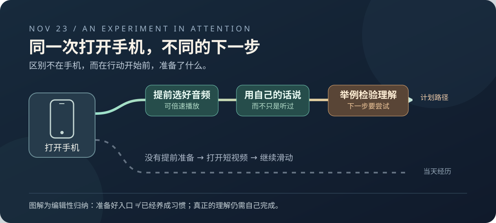
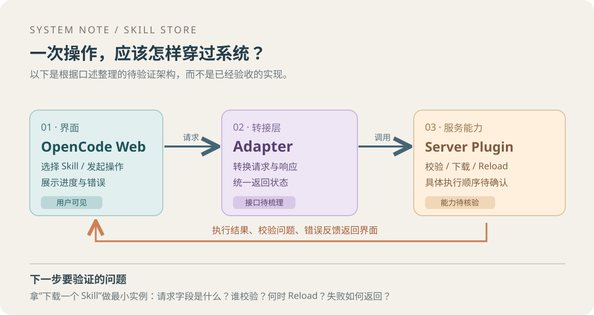

MONDAY / 23 NOVEMBER 2026 · DAILY REFLECTION
把入口放在行动之前
早晨想用听书和复述替代随手刷视频，白天想把代码与架构真正想清楚，晚上又抱着电脑玩起游戏。今天让我在意的，不是自己没有任何想法，而是很多好想法还没有变成顺手可执行的下一步。
The question
同一次打开手机，为什么会走向不同的地方？
今天在公司看了不少视频和抖音。我并不是不知道自己更想做什么：早晨听音频、复述知识、理解项目的底层逻辑，这些想法其实都很明确。但真正打开手机、打开电脑时，下一步常常被更容易进入的内容接管。

听书、按摩脸和眼睛、准备好更舒服的出门节奏。
刷视频、犯困；喝咖啡和短暂休息后继续执行代码。
自己做的蛋炒饭很满意，之后又沉浸在游戏里。
如果把这些片段连起来看，我想尝试改变的并不是某一个 App，而是行动开始之前，默认会遇到什么。这个共同点是我对一天经历的归纳，并非已经证实的行为规律。
01 / A prepared morning
早晨：让听见的知识有机会变成自己的话
起来后，我先吃了昨天的剩菜，再准备去公司。出门前如果能按摩一下脸和眼睛、喷点香水，我觉得会更好。这些小事不复杂，但很容易在匆忙中被忽略。
更重要的念头是听音频。比如得到听书一类内容，我希望早上起来就能播放，并在听完后用自己的语言表达一遍，而不只是把声音当背景。
我想到两个可能的入口：把音频放到手机 App 里，或者先搭一个自己的网站。网站如果能调整播放倍速，也许就能先把最小的听书流程跑起来。今天只是提出了方向，还没有决定最终用哪一种方案。
02 / Friction
白天：注意力和精力，都是有限的
到公司后，有一段时间一直刷视频。我对自己这种状态感到不满意，并联想到：要是想听的音频早就准备好，至少会多一个容易开启的替代选择。
上午我也比较困。我觉得和前一天睡得晚有关，后来下楼喝了咖啡，状态好了一些；趴在桌上眯了一会儿后，再继续执行代码。至于睡眠、刷视频与工作状态究竟怎样相互影响，单凭今天的一段经历还不能下定论。
把“打开设备以后”拆成三个状态
依次选择，观察当天发生的事与准备尝试的改变之间的区别。核心关系在本节文字与封面图中也可以独立读懂。
当时：打开视频后，继续看下去
今天我确实花了时间刷短视频。它是一段真实经历，而不是对自己未来一定会怎样的预测。
下一步设想：把可播放的音频放在入口处
提前选好内容，支持在手机上播放和调速。这样无需先搜索半天，就能开始一段计划好的输入。
真正想练习的：合上内容，用自己的话说
不依赖原文解释一个观点，甚至用一个例子检验。它才是音频工具背后最重要的学习目的。
03 / Understanding the work
工作：页面可以生成，底层逻辑还得自己想清楚
继续执行项目代码时，我意识到有两块地方需要认真梳理。第一是 UI：一个界面为什么这样设计，点击后状态怎么变，不同页面之间如何相互关联？第二是数据库：当前数据格式是什么，将来如何使用，哪些设计还需要调整？
我已经能够借助 AI 生成相关页面、代码、甚至 PDF 教程，但我不希望自己只停留在“看到了生成结果”。越是复杂的系统，越需要画出真实流程，逐个追问输入、状态、边界和错误是怎么发生的，再回到代码中验证图有没有画对。
开会时，我也想到要把重要信息记录下来，最好以后形成合规的会议录音与整理习惯。不过这次并没有真正养成。录音前还需要确认参与者知情、会议许可及内部资料的保存边界。
我还想建立工作笔记的 GitHub 仓库，逐步把适合公开或获得授权的知识整理成可视化页面。但仓库能否公开、哪些材料可以转换，仍需要先区分清楚。
04 / A system sketch
Skill Store：不要只画界面，要画请求究竟去了哪里
今天想到的 Skill Store，按目前设想有三个主要位置：OpenCode Web 作为前端，Adapter 负责转接，OpenCode Server Plugin 提供服务能力。下载 Skill、Reload Skill 与校验是我关心的操作。但这些能力的精确接口、执行顺序、状态设计，还要再确认。

我下一步可以从一个最小例子开始，例如“下载一个 Skill”：请求字段有哪些？由谁做校验？完成下载以后是否、何时 Reload？出现问题要把什么状态反馈给前端？如果我不能解释这些关系，就说明设计仍然有没想清楚的地方。
因此，可视化不只是最后做个好看的图。它更像一次自我检查：让代码背后的假设暴露出来，然后拿实际执行结果去修正。
05 / Back home
晚上：做饭让我满意，游戏让我又看见旧问题
下班回家后，菜已经切好了。我做了几个菜和蛋炒饭，觉得味道不错，也健康、便宜。比起总在外面吃饭，我想尽可能继续在家做菜。这是一件今天确实完成、也让我满意的小事。
但饭后我又抱着电脑玩游戏，一直玩到开始这次复盘。想到上午犯困，以及自己反复提出“早睡早起”，我意识到晚上依然有一个需要面对的拉扯：明明在意第二天的精力，却很容易让游戏占用原本想留给休息的时间。
今天我还没有真正解决它。也许下一次能做的不是临睡前再提醒自己，而是在开始游戏前就想清楚什么时候结束。这个做法是根据今天情况提出的尝试，不是我已经做到的习惯。
06 / The next small steps
先把一个入口做好，再让它带出一次真实行动
今天出现了不少计划。我不想因为列出的想法很多，就以为它们已经变成成果。更有价值的是先挑一个容易检验的起点：
- 音频：先做能在手机打开、能选内容和调倍速的最小播放入口，尝试听完后自己复述。
- 系统理解：选一个 UI 交互，画出页面、状态与数据的关系；再检查数据库格式和真实代码。
- Skill Store：以单个下载场景核对 Web、Adapter、Server Plugin、校验和 Reload 的边界。
- 记录与生活：在许可前提下准备会议记录；继续尽量在家做饭，并为早睡和减少深夜游戏预先做安排。
这些是从今天口述提炼出的待办方向，不代表相关播放器、架构设计、会议录音流程或作息习惯已经完成。
给自己的提醒：我不缺“应该做什么”的想法。下一步要练习的，是在注意力被带走之前，把入口准备好；在 AI 给出结果之后，仍然能亲自把它的逻辑讲清楚。